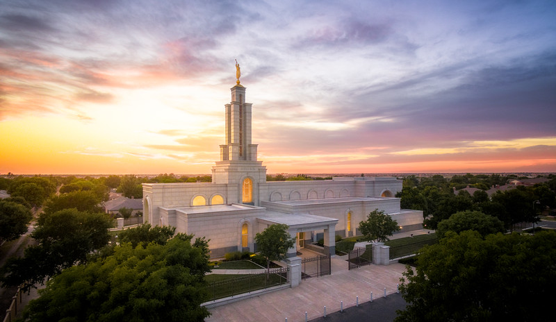

Lubbock Texas Temple
 The Lubbock Texas Temple stands just behind the Lubbock Texas Stake Center on Frankford Avenue in Southwest Lubbock. A stroll around the temple offers a view of rich symbolism exhibited in the beautiful panes of stained glass and in the etched granite walls. Visitors are welcome to tour the temple exterior and to attend Sunday services in the adjacent meetinghouse.Elder Rex D. Pinegar, who presided at the groundbreaking ceremony, said on that occasion, "A family gathers to see and be part of the beginning of the family home because it will be a place where they can come to experience the love, receive the counsel, and feel the belonging feelings of their earthly family. There are few feelings to match that of 'coming home.' We have gathered here today to begin construction of a temple which is the symbol of our heavenly home. In this 'heavenly home' we will feel the love and experience the presence of the spirit of our Father in Heaven." He continued, "Coming to this 'home' we can receive His greatest blessings. And, just as there is work to do and service to give around an earthly home to enable all family members to enjoy the greatest happiness, there is work to do and service to give when we come to this 'home,' the House of the Lord."